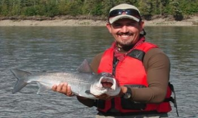

<!-- Post -->
<article class="post">
    <header>
        <div class="title">
            <h2>
                <a href="#">
                    PPIC Viewpoint
                </a>
            </h2>
        </div>
        <div class="meta">
            <time class="published" datetime="2015-11-01">January 11, 2016</time>
            <a href="#" class="author">
                <span class="name">Joshua Viers</span>
                
            </a>
        </div>
    </header>
    <table>
        <tr style="border:0px; background-color:white;">
            <th style="width:25.5%">
                
            </th>
            <th style="width:74.5%; vertical-align: top;">
                <p style="margin:0;">
                        Professor Joshua Viers weighs in on "natural disasters" and the role of floods shaping floodplains. </p>
            </th>
        </tr>
    </table>
</article>